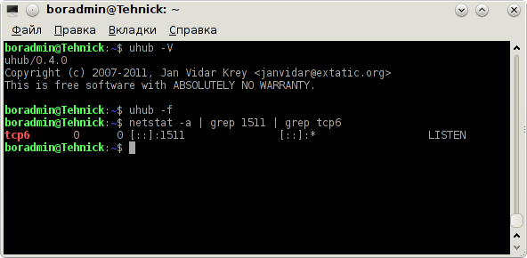

uhub — packages for Debian GNU/Linux and Ubuntu
Created: 2011-09-27
Updated: 2015-08-27
Description:
This is a free translation of my notes and it may differ from
original.
uhub is a high performance peer-to-peer hub for the ADC network. Its low memory footprint allows it to handle several thousand users on high-end servers, or a small private hub on embedded hardware.
uhub uses the
Advanced Direct Connect protocol, and is compatible with DC++, LinuxDC++, EiskaltDC++ and other ADC clients.
Key features:
* High performance and low memory usage.
* Support of IPv4 and IPv6.
* Support of SSL/TLS (optional).
* Advanced access control support.
* Easy configuration.
Last stable
release version: 0.5.0 (2014-11-17), see
changelog for more details.
Activity in the project:
network graphic,
commits in master branch

deb packages:
Packages can be downloaded
here. They are suitable for Debian GNU/Linux >= 7.0 (Wheezy) and for Ubuntu >= 12.04 (Precise Pangolin). Sources are also available ibid.
Adding
this PPA in Debian GNU/Linux Wheezy:
sudo add-apt-repository -y 'deb http://ppa.launchpad.net/tehnick/tehnick/ubuntu precise main'
Adding
this PPA in Debian GNU/Linux Jessie:
sudo add-apt-repository -y 'deb http://ppa.launchpad.net/tehnick/tehnick/ubuntu trusty main'
Adding
this PPA in Debian GNU/Linux Stretch:
sudo add-apt-repository -y 'deb http://ppa.launchpad.net/tehnick/tehnick/ubuntu vivid main'
Adding
this PPA in Debian GNU/Linux Sid:
sudo add-apt-repository -y 'deb http://ppa.launchpad.net/tehnick/tehnick/ubuntu vivid main'
Adding
this PPA in Ubuntu >= 12.04 (Precise Pangolin):
sudo add-apt-repository ppa:tehnick/tehnick
Updating the list of available packages:
sudo apt-get update
Installing
uhub:
sudo apt-get install -V uhub
Or you can install
uhub-unstable (daily builds):
sudo apt-get install -V uhub-unstable
uhub-unstable package is updated automatically from
git repository of program. Script for update is something like
that.
Bug reports in the deb-packages you can send to
me. Bug reports and feature request to the program you may leave
here.
Now
uhub package is available in official
Debian >= 7.0 (Wheezy) and
Ubuntu >= 12.04 (Precise Pangolin) repositories.
External links:
uhub – Documentation
License: Public Domain (
en)
Note:
All materials presented here can be used in part or in whole without reference to the author (me) and the original page.
{kind=link}